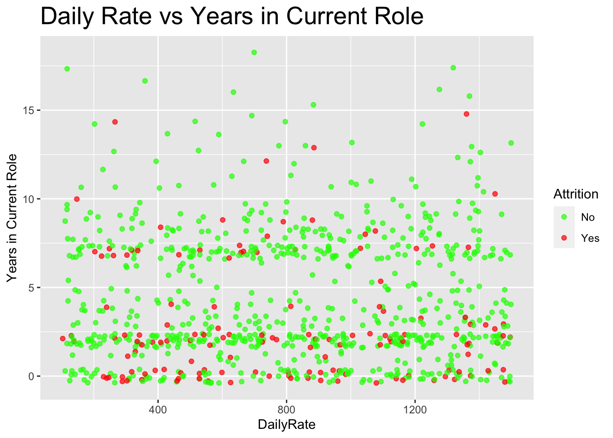

Talent Management Attrition Case Study
In this case study, I analyzed a data set with multiple potential features to determine which features were highly telling in attrition rates. Out of the 840 records given, there were 140 that landed in the numerator for attrition rates. In the first two chunks of code, I loaded int the libraries that would be used for this case study and created several plots to determine contributing factors
Contributing Factors
Some of the most correlated data points in attrition rates were: Monthly income/Monthly Rate Job Level Overtime Age
Attrition Predictive Modeling
Once I was able to figure out several data points that were highly correlated with attrition rates, I ran several predictive models (KNN, Naive Bayes, and Random Forest) to predict if an employee would fall in to the denominator for attrition rates.
Knn Model:
This model performed fairly well in accuracy (84%) and Sensitivity (99.2%), but failed to have high specificity rates. This was concerning as there were a lot of false positives in this modle
Naive Bayes:
Similarly to the KNN model, the Naive Bayes model performed well in accuracy (85%), but the sensitivity and specificity were opposite of the KNN model. The Naive Bayes model was able to accurately predict the employees who were not in the numerator of the attrition rate, but was very inaccurate in that it predicted a lot of false positives.
Random Forest:
The random forest model was by far the best model that I ran for predicting attrition rates. It’s accuracy (80.8%) was slightly lower than both the KNN and Naive Bayes models, but it’s sensitivity and specificity were drastically higher (61.5% and 84.2% respectfully). This meant that this model was able to more accurately predict true positives and true negatives while not sacrificing accuracy for false positives and false negatives
Salary Predictive Modeling:
I then ran two separate models for predicting salaries for employees. The highest correlating fields were Job Level, Total Working Years and Age. This makes sense as the older you are, the more years you would have worked and your job level is usually higher.
Random Forest:
When running a random forest model using the fields provided above, I was able to return a RMSE of 1242.69. This was slightly better than the RMSE when using all fields in this model (RMSE of 1278.82)
Linear Regression:
I then wanted to compare the Random Forest model to a linear regression model, because salary theoretically should be linearly correlated with age, job level and years working. However I found that this models RMSE (1333.81) was slightly higher than the Random Forest model and therefore did not predict salary as accurate.
Chunk 1: loading in packages used in markdown file
library(tidyverse)## ── Attaching packages ─────────────────────────────────────── tidyverse 1.3.1 ──## ✓ ggplot2 3.3.3 ✓ purrr 0.3.4
## ✓ tibble 3.1.1 ✓ dplyr 1.0.6
## ✓ tidyr 1.1.3 ✓ stringr 1.4.0
## ✓ readr 1.4.0 ✓ forcats 0.5.1## ── Conflicts ────────────────────────────────────────── tidyverse_conflicts() ──
## x dplyr::filter() masks stats::filter()
## x dplyr::lag() masks stats::lag()library(caret)## Loading required package: lattice##
## Attaching package: 'caret'## The following object is masked from 'package:purrr':
##
## liftlibrary(ggplot2)
library(magrittr)##
## Attaching package: 'magrittr'## The following object is masked from 'package:purrr':
##
## set_names## The following object is masked from 'package:tidyr':
##
## extractlibrary(ggExtra)
library(e1071)
library(class)
library(ggthemes)
library(naniar)
library(PerformanceAnalytics)## Loading required package: xts## Loading required package: zoo##
## Attaching package: 'zoo'## The following objects are masked from 'package:base':
##
## as.Date, as.Date.numeric##
## Attaching package: 'xts'## The following objects are masked from 'package:dplyr':
##
## first, last##
## Attaching package: 'PerformanceAnalytics'## The following objects are masked from 'package:e1071':
##
## kurtosis, skewness## The following object is masked from 'package:graphics':
##
## legendlibrary(corrplot)## corrplot 0.90 loadedlibrary(RColorBrewer)
library(funModeling)## Loading required package: Hmisc## Loading required package: survival##
## Attaching package: 'survival'## The following object is masked from 'package:caret':
##
## cluster## Loading required package: Formula##
## Attaching package: 'Hmisc'## The following object is masked from 'package:e1071':
##
## impute## The following objects are masked from 'package:dplyr':
##
## src, summarize## The following objects are masked from 'package:base':
##
## format.pval, units## funModeling v.1.9.4 :)
## Examples and tutorials at livebook.datascienceheroes.com
## / Now in Spanish: librovivodecienciadedatos.ailibrary(gridExtra)##
## Attaching package: 'gridExtra'## The following object is masked from 'package:dplyr':
##
## combinelibrary(stringr)
library(plyr)## ------------------------------------------------------------------------------## You have loaded plyr after dplyr - this is likely to cause problems.
## If you need functions from both plyr and dplyr, please load plyr first, then dplyr:
## library(plyr); library(dplyr)## ------------------------------------------------------------------------------##
## Attaching package: 'plyr'## The following objects are masked from 'package:Hmisc':
##
## is.discrete, summarize## The following objects are masked from 'package:dplyr':
##
## arrange, count, desc, failwith, id, mutate, rename, summarise,
## summarize## The following object is masked from 'package:purrr':
##
## compactlibrary(janitor)##
## Attaching package: 'janitor'## The following objects are masked from 'package:stats':
##
## chisq.test, fisher.testlibrary(devtools)## Loading required package: usethislibrary(rpart)
library(caTools)
library(randomForest)## randomForest 4.6-14## Type rfNews() to see new features/changes/bug fixes.##
## Attaching package: 'randomForest'## The following object is masked from 'package:gridExtra':
##
## combine## The following object is masked from 'package:dplyr':
##
## combine## The following object is masked from 'package:ggplot2':
##
## marginlibrary(lattice)
library(rmarkdown)
library(scales)##
## Attaching package: 'scales'## The following object is masked from 'package:purrr':
##
## discard## The following object is masked from 'package:readr':
##
## col_factorlibrary(readxl)
library(knitr)Chunk 2: Loading in full file and looking at basic summary statistics
# reading in data
df = read_csv('~/Desktop/MSDS/Doing Data Science/MSDS_6306_Doing-Data-Science-Master/Unit 14 and 15 Case Study 2/CaseStudy2-data.csv')##
## ── Column specification ────────────────────────────────────────────────────────
## cols(
## .default = col_double(),
## Attrition = col_character(),
## BusinessTravel = col_character(),
## Department = col_character(),
## EducationField = col_character(),
## Gender = col_character(),
## JobRole = col_character(),
## MaritalStatus = col_character(),
## Over18 = col_character(),
## OverTime = col_character()
## )
## ℹ Use `spec()` for the full column specifications.#looking at high level summary stats of columns
head(df)## # A tibble: 6 x 36
## ID Age Attrition BusinessTravel DailyRate Department DistanceFromHome
## <dbl> <dbl> <chr> <chr> <dbl> <chr> <dbl>
## 1 1 32 No Travel_Rarely 117 Sales 13
## 2 2 40 No Travel_Rarely 1308 Research & D… 14
## 3 3 35 No Travel_Frequen… 200 Research & D… 18
## 4 4 32 No Travel_Rarely 801 Sales 1
## 5 5 24 No Travel_Frequen… 567 Research & D… 2
## 6 6 27 No Travel_Frequen… 294 Research & D… 10
## # … with 29 more variables: Education <dbl>, EducationField <chr>,
## # EmployeeCount <dbl>, EmployeeNumber <dbl>, EnvironmentSatisfaction <dbl>,
## # Gender <chr>, HourlyRate <dbl>, JobInvolvement <dbl>, JobLevel <dbl>,
## # JobRole <chr>, JobSatisfaction <dbl>, MaritalStatus <chr>,
## # MonthlyIncome <dbl>, MonthlyRate <dbl>, NumCompaniesWorked <dbl>,
## # Over18 <chr>, OverTime <chr>, PercentSalaryHike <dbl>,
## # PerformanceRating <dbl>, RelationshipSatisfaction <dbl>,
## # StandardHours <dbl>, StockOptionLevel <dbl>, TotalWorkingYears <dbl>,
## # TrainingTimesLastYear <dbl>, WorkLifeBalance <dbl>, YearsAtCompany <dbl>,
## # YearsInCurrentRole <dbl>, YearsSinceLastPromotion <dbl>,
## # YearsWithCurrManager <dbl>summary(df)## ID Age Attrition BusinessTravel
## Min. : 1.0 Min. :18.00 Length:870 Length:870
## 1st Qu.:218.2 1st Qu.:30.00 Class :character Class :character
## Median :435.5 Median :35.00 Mode :character Mode :character
## Mean :435.5 Mean :36.83
## 3rd Qu.:652.8 3rd Qu.:43.00
## Max. :870.0 Max. :60.00
## DailyRate Department DistanceFromHome Education
## Min. : 103.0 Length:870 Min. : 1.000 Min. :1.000
## 1st Qu.: 472.5 Class :character 1st Qu.: 2.000 1st Qu.:2.000
## Median : 817.5 Mode :character Median : 7.000 Median :3.000
## Mean : 815.2 Mean : 9.339 Mean :2.901
## 3rd Qu.:1165.8 3rd Qu.:14.000 3rd Qu.:4.000
## Max. :1499.0 Max. :29.000 Max. :5.000
## EducationField EmployeeCount EmployeeNumber EnvironmentSatisfaction
## Length:870 Min. :1 Min. : 1.0 Min. :1.000
## Class :character 1st Qu.:1 1st Qu.: 477.2 1st Qu.:2.000
## Mode :character Median :1 Median :1039.0 Median :3.000
## Mean :1 Mean :1029.8 Mean :2.701
## 3rd Qu.:1 3rd Qu.:1561.5 3rd Qu.:4.000
## Max. :1 Max. :2064.0 Max. :4.000
## Gender HourlyRate JobInvolvement JobLevel
## Length:870 Min. : 30.00 Min. :1.000 Min. :1.000
## Class :character 1st Qu.: 48.00 1st Qu.:2.000 1st Qu.:1.000
## Mode :character Median : 66.00 Median :3.000 Median :2.000
## Mean : 65.61 Mean :2.723 Mean :2.039
## 3rd Qu.: 83.00 3rd Qu.:3.000 3rd Qu.:3.000
## Max. :100.00 Max. :4.000 Max. :5.000
## JobRole JobSatisfaction MaritalStatus MonthlyIncome
## Length:870 Min. :1.000 Length:870 Min. : 1081
## Class :character 1st Qu.:2.000 Class :character 1st Qu.: 2840
## Mode :character Median :3.000 Mode :character Median : 4946
## Mean :2.709 Mean : 6390
## 3rd Qu.:4.000 3rd Qu.: 8182
## Max. :4.000 Max. :19999
## MonthlyRate NumCompaniesWorked Over18 OverTime
## Min. : 2094 Min. :0.000 Length:870 Length:870
## 1st Qu.: 8092 1st Qu.:1.000 Class :character Class :character
## Median :14074 Median :2.000 Mode :character Mode :character
## Mean :14326 Mean :2.728
## 3rd Qu.:20456 3rd Qu.:4.000
## Max. :26997 Max. :9.000
## PercentSalaryHike PerformanceRating RelationshipSatisfaction StandardHours
## Min. :11.0 Min. :3.000 Min. :1.000 Min. :80
## 1st Qu.:12.0 1st Qu.:3.000 1st Qu.:2.000 1st Qu.:80
## Median :14.0 Median :3.000 Median :3.000 Median :80
## Mean :15.2 Mean :3.152 Mean :2.707 Mean :80
## 3rd Qu.:18.0 3rd Qu.:3.000 3rd Qu.:4.000 3rd Qu.:80
## Max. :25.0 Max. :4.000 Max. :4.000 Max. :80
## StockOptionLevel TotalWorkingYears TrainingTimesLastYear WorkLifeBalance
## Min. :0.0000 Min. : 0.00 Min. :0.000 Min. :1.000
## 1st Qu.:0.0000 1st Qu.: 6.00 1st Qu.:2.000 1st Qu.:2.000
## Median :1.0000 Median :10.00 Median :3.000 Median :3.000
## Mean :0.7839 Mean :11.05 Mean :2.832 Mean :2.782
## 3rd Qu.:1.0000 3rd Qu.:15.00 3rd Qu.:3.000 3rd Qu.:3.000
## Max. :3.0000 Max. :40.00 Max. :6.000 Max. :4.000
## YearsAtCompany YearsInCurrentRole YearsSinceLastPromotion
## Min. : 0.000 Min. : 0.000 Min. : 0.000
## 1st Qu.: 3.000 1st Qu.: 2.000 1st Qu.: 0.000
## Median : 5.000 Median : 3.000 Median : 1.000
## Mean : 6.962 Mean : 4.205 Mean : 2.169
## 3rd Qu.:10.000 3rd Qu.: 7.000 3rd Qu.: 3.000
## Max. :40.000 Max. :18.000 Max. :15.000
## YearsWithCurrManager
## Min. : 0.00
## 1st Qu.: 2.00
## Median : 3.00
## Mean : 4.14
## 3rd Qu.: 7.00
## Max. :17.00str(df)## spec_tbl_df[,36] [870 × 36] (S3: spec_tbl_df/tbl_df/tbl/data.frame)
## $ ID : num [1:870] 1 2 3 4 5 6 7 8 9 10 ...
## $ Age : num [1:870] 32 40 35 32 24 27 41 37 34 34 ...
## $ Attrition : chr [1:870] "No" "No" "No" "No" ...
## $ BusinessTravel : chr [1:870] "Travel_Rarely" "Travel_Rarely" "Travel_Frequently" "Travel_Rarely" ...
## $ DailyRate : num [1:870] 117 1308 200 801 567 ...
## $ Department : chr [1:870] "Sales" "Research & Development" "Research & Development" "Sales" ...
## $ DistanceFromHome : num [1:870] 13 14 18 1 2 10 5 10 10 10 ...
## $ Education : num [1:870] 4 3 2 4 1 2 5 4 4 4 ...
## $ EducationField : chr [1:870] "Life Sciences" "Medical" "Life Sciences" "Marketing" ...
## $ EmployeeCount : num [1:870] 1 1 1 1 1 1 1 1 1 1 ...
## $ EmployeeNumber : num [1:870] 859 1128 1412 2016 1646 ...
## $ EnvironmentSatisfaction : num [1:870] 2 3 3 3 1 4 2 4 3 4 ...
## $ Gender : chr [1:870] "Male" "Male" "Male" "Female" ...
## $ HourlyRate : num [1:870] 73 44 60 48 32 32 90 88 87 92 ...
## $ JobInvolvement : num [1:870] 3 2 3 3 3 3 4 2 3 2 ...
## $ JobLevel : num [1:870] 2 5 3 3 1 3 1 2 1 2 ...
## $ JobRole : chr [1:870] "Sales Executive" "Research Director" "Manufacturing Director" "Sales Executive" ...
## $ JobSatisfaction : num [1:870] 4 3 4 4 4 1 3 4 3 3 ...
## $ MaritalStatus : chr [1:870] "Divorced" "Single" "Single" "Married" ...
## $ MonthlyIncome : num [1:870] 4403 19626 9362 10422 3760 ...
## $ MonthlyRate : num [1:870] 9250 17544 19944 24032 17218 ...
## $ NumCompaniesWorked : num [1:870] 2 1 2 1 1 1 2 2 1 1 ...
## $ Over18 : chr [1:870] "Y" "Y" "Y" "Y" ...
## $ OverTime : chr [1:870] "No" "No" "No" "No" ...
## $ PercentSalaryHike : num [1:870] 11 14 11 19 13 21 12 14 19 14 ...
## $ PerformanceRating : num [1:870] 3 3 3 3 3 4 3 3 3 3 ...
## $ RelationshipSatisfaction: num [1:870] 3 1 3 3 3 3 1 3 4 2 ...
## $ StandardHours : num [1:870] 80 80 80 80 80 80 80 80 80 80 ...
## $ StockOptionLevel : num [1:870] 1 0 0 2 0 2 0 3 1 1 ...
## $ TotalWorkingYears : num [1:870] 8 21 10 14 6 9 7 8 1 8 ...
## $ TrainingTimesLastYear : num [1:870] 3 2 2 3 2 4 5 5 2 3 ...
## $ WorkLifeBalance : num [1:870] 2 4 3 3 3 2 2 3 3 2 ...
## $ YearsAtCompany : num [1:870] 5 20 2 14 6 9 4 1 1 8 ...
## $ YearsInCurrentRole : num [1:870] 2 7 2 10 3 7 2 0 1 2 ...
## $ YearsSinceLastPromotion : num [1:870] 0 4 2 5 1 1 0 0 0 7 ...
## $ YearsWithCurrManager : num [1:870] 3 9 2 7 3 7 3 0 0 7 ...
## - attr(*, "spec")=
## .. cols(
## .. ID = col_double(),
## .. Age = col_double(),
## .. Attrition = col_character(),
## .. BusinessTravel = col_character(),
## .. DailyRate = col_double(),
## .. Department = col_character(),
## .. DistanceFromHome = col_double(),
## .. Education = col_double(),
## .. EducationField = col_character(),
## .. EmployeeCount = col_double(),
## .. EmployeeNumber = col_double(),
## .. EnvironmentSatisfaction = col_double(),
## .. Gender = col_character(),
## .. HourlyRate = col_double(),
## .. JobInvolvement = col_double(),
## .. JobLevel = col_double(),
## .. JobRole = col_character(),
## .. JobSatisfaction = col_double(),
## .. MaritalStatus = col_character(),
## .. MonthlyIncome = col_double(),
## .. MonthlyRate = col_double(),
## .. NumCompaniesWorked = col_double(),
## .. Over18 = col_character(),
## .. OverTime = col_character(),
## .. PercentSalaryHike = col_double(),
## .. PerformanceRating = col_double(),
## .. RelationshipSatisfaction = col_double(),
## .. StandardHours = col_double(),
## .. StockOptionLevel = col_double(),
## .. TotalWorkingYears = col_double(),
## .. TrainingTimesLastYear = col_double(),
## .. WorkLifeBalance = col_double(),
## .. YearsAtCompany = col_double(),
## .. YearsInCurrentRole = col_double(),
## .. YearsSinceLastPromotion = col_double(),
## .. YearsWithCurrManager = col_double()
## .. )# checking for null values in columns
colSums(is.na(df))## ID Age Attrition
## 0 0 0
## BusinessTravel DailyRate Department
## 0 0 0
## DistanceFromHome Education EducationField
## 0 0 0
## EmployeeCount EmployeeNumber EnvironmentSatisfaction
## 0 0 0
## Gender HourlyRate JobInvolvement
## 0 0 0
## JobLevel JobRole JobSatisfaction
## 0 0 0
## MaritalStatus MonthlyIncome MonthlyRate
## 0 0 0
## NumCompaniesWorked Over18 OverTime
## 0 0 0
## PercentSalaryHike PerformanceRating RelationshipSatisfaction
## 0 0 0
## StandardHours StockOptionLevel TotalWorkingYears
## 0 0 0
## TrainingTimesLastYear WorkLifeBalance YearsAtCompany
## 0 0 0
## YearsInCurrentRole YearsSinceLastPromotion YearsWithCurrManager
## 0 0 0gg_miss_var(df,show_pct = TRUE)# normalizing column
df = df %>% mutate(BusinessTravel = ifelse(BusinessTravel == 'Non_Travel','No','Yes'))Chunk 3: EDA Graphs
In this chunk, I several ggplots to determine which fields would best determine employee attrition.
df %>% ggplot()+
geom_boxplot(aes(x=Attrition, y=MonthlyIncome, fill=Attrition), alpha=0.7)+
ggtitle("Attrition by Monthly Income")+
scale_y_continuous(name='Monthly Income')+
theme(plot.title=element_text(size=20, color="Black"))+
scale_fill_manual(values=c("Green","Red"))df %>% ggplot()+
geom_boxplot(aes(x=Attrition, y=MonthlyRate, fill = Attrition), alpha=0.7)+
ggtitle("Attrition by Monthly Rate")+
scale_y_continuous(name="Monthly Rate")+
scale_fill_manual(values=c("Green","Red"))+
theme(plot.title=element_text(size=20, color="Black"))# Environment Satisfaction v Attrition
df %>% ggplot()+
geom_boxplot(aes(x=Attrition, y=EnvironmentSatisfaction, fill=Attrition), alpha=0.7)+
ggtitle("Attrition by Envoronment Satisfaction")+
scale_y_continuous(name='Environment Satisfaction')+
theme(plot.title=element_text(size=20, color="Black"))+
scale_fill_manual(values=c("Green","Red"))df %>% ggplot()+
geom_point(aes(x=Age, y=MonthlyRate,col = Attrition), alpha=0.7)+
ggtitle("Monthly Rate v Age by Attrition")+
scale_y_continuous(name='Monthly Rate')+
theme(plot.title=element_text(size=20, color='Black'))+
scale_color_manual(values=c("Green","Red"))+
facet_wrap(vars(JobLevel))df %>% ggplot()+
geom_point(aes(x=JobLevel, y=DailyRate, color=Attrition), alpha=0.7)+
ggtitle("Job Level vs Daily Rate")+
scale_y_continuous(name="Years in Current Role")+
theme(plot.title=element_text(size=20, color="Black")) +
scale_color_manual(values=c("Green","Red"))
df %>% ggplot()+
geom_point(aes(x=DailyRate, y=YearsInCurrentRole, color=Attrition), alpha=0.7,position = 'jitter')+
ggtitle("Daily Rate vs Years in Current Role")+
scale_y_continuous(name="Years in Current Role")+
theme(plot.title=element_text(size=20, color="Black")) +
scale_color_manual(values=c("Green","Red"))
df %>% ggplot()+
geom_point(aes(x=NumCompaniesWorked ,y =YearsInCurrentRole ,color = Attrition),alpha = 0.7,position = 'jitter')+
ggtitle('Number of Companies Worked vs Years in Current Role')+
scale_color_manual(values=c("Green","Red"))df %>% ggplot()+
geom_point(aes(x=YearsInCurrentRole ,y = YearsWithCurrManager ,color = Attrition),alpha = 0.7,position = 'jitter')+
ggtitle('Years in Current Role vs Years with Current Manager')# Relationship between attrition and overtime
# overtime = df%>%
# group_by(OverTime)%>%
# count(Attrition)%>%
# mutate(AttritionRate=percent(n/sum(n)))
# overtime
#
# df %>% ggplot(aes(x=OverTime, fill=Attrition))+
# geom_bar(alpha=0.7)+
# geom_text(data=overtime, aes(y=n,label=AttritionRate), position=position_stack(vjust=0.5), size=3)+
# ggtitle("Attrition by Overtime")+
# scale_x_discrete(name="Overtime")+
# scale_y_continuous(name="Number of Employees")+
# theme(plot.title=element_text(size=20, color="Black"))+
# scale_fill_manual(values=c("Green", "Red"))
# Relationship between monthly income, work life balance, and attrition
df %>%
mutate(Attrition=ifelse(Attrition=="Yes"," Yes (140)","No (730)"))%>%
ggplot()+
geom_boxplot(aes(x=Attrition, y=MonthlyIncome, fill=Attrition), alpha=0.7)+
ggtitle("Attrition by Monthly Income")+
scale_y_continuous(name='Monthly Income')+
theme(plot.title=element_text(size=20, color="Black"))+
scale_fill_manual(values=c("Green","Red")) # Determining if Attrition is based off of Income (Monthly Rate and Income)
p = df %>%
mutate(Attrition=ifelse(Attrition=="Yes"," Yes (140)","No (730)"))%>%
ggplot()+
geom_boxplot(aes(x=Attrition, y=MonthlyIncome, fill=Attrition), alpha=0.7)+
ggtitle("Attrition by Monthly Income")+
scale_y_continuous(name='Monthly Income')+
theme(plot.title=element_text(size=15, color="Black"))+
scale_fill_manual(values=c("Green","Red"))
pp0 = df %>%
mutate(Attrition=ifelse(Attrition=="Yes"," Yes (140)","No (730)"))%>%
ggplot()+
geom_boxplot(aes(x=Attrition, y=MonthlyRate, fill = Attrition), alpha=0.7)+
ggtitle("Attrition by Monthly Rate")+
scale_y_continuous(name="Monthly Rate")+
theme(plot.title=element_text(size=15, color="Black"))+
scale_fill_manual(values=c("Green","Red"))
p0grid.arrange(p,p0)#Attrition based on job level
#
# level = df%>%
# group_by(JobLevel)%>%
# count(Attrition)%>%
# mutate(AttritionRate=percent(n/sum(n)))
# level
#
# df %>%
# ggplot( aes(x=JobLevel, fill=Attrition))+
# geom_bar(alpha=0.7)+
# geom_text(data=level, aes(y=n,label=AttritionRate), position=position_stack(vjust=0.5), size=3)+
# ggtitle("Attrition by Job Level")+
# scale_x_discrete(name="Job Level", labels = df$JobLevel)+
# scale_y_continuous(name="# of employees")+
# theme(plot.title=element_text(size=20, color="Black"))+
# scale_fill_manual(values=c("Green", "Red"))
#
#
# p1 = df %>%
# ggplot( aes(x=JobLevel, fill=Attrition))+
# geom_bar(alpha=0.7)+
# geom_text(data=level, aes(y=n,label=AttritionRate), position=position_stack(vjust=0.5), size=3)+
# ggtitle("Attrition by Job Level")+
# scale_x_discrete(name="Job Level", labels = df$JobLevel)+
# scale_y_continuous(name="# of employees")+
# theme(plot.title=element_text(size=20, color="Black"))+
# scale_fill_manual(values=c("Green", "Red"))+
# p1
# grid.arrange(p,p1)
# p2 = df %>%
# ggplot(aes(x=OverTime, fill=Attrition))+
# geom_bar(alpha=0.7)+
# geom_text(data=overtime, aes(y=n,label=AttritionRate), position=position_stack(vjust=0.5), size=3)+
# ggtitle("Attrition by Overtime")+
# scale_x_discrete(name="Overtime")+
# scale_y_continuous(name="Number of Employees")+
# theme(plot.title=element_text(size=20, color="Black"))+
# scale_fill_manual(values=c("Green", "Red"))
# p2
# grid.arrange(p1,p2)Chunk 4: KNN Model
In this chunk, I ran a KNN classification model which had poor specificity, meaning that the false negatives are extremely high. Hover the accuracy was extremly high at 84% and the Sensitivity was 99.59%.
dfKNN= read.csv('~/Desktop/MSDS/Doing Data Science/MSDS_6306_Doing-Data-Science-Master/Unit 14 and 15 Case Study 2/CaseStudy2-data.csv',header = TRUE)
set.seed(57)
splitPerc = .70
trainAttrKNN= sample(1:dim(dfKNN)[1],round(splitPerc * dim(dfKNN)[1]))
trainKNN = dfKNN[trainAttrKNN,]
testKNN = dfKNN[-trainAttrKNN,]
#creation of KNN model using leave one out method
# classification = knn.cv(dfKNN[,c(2,6,14,16,18,20,22)],dfKNN$Attrition,prob = TRUE, k = 9)
# table(classification,dfKNN$Attrition)
# confusionMatrix(table(classification,dfKNN$Attrition))
# determining best k
set.seed(57)
#running KNN model 90 times to find best k parameter
accs = data.frame(accuracy = numeric(90), k = numeric(90))
for(i in 1:90)
{
classification = knn.cv(dfKNN[,c(2,14,16,18,20,22)],dfKNN$Attrition,prob = TRUE, k = i)
table(classification,dfKNN$Attrition)
CM = confusionMatrix(table(classification,dfKNN$Attrition))
accs$accuracy[i] = CM$overall[1]
accs$k[i] = i
}
plot(accs$k,accs$accuracy, type = "l", xlab = "k")
abline(v=accs$k[which.max(accs$accuracy)], col="red")accs$k[which.max(accs$accuracy)]## [1] 19set.seed(57)
#use tuned parameter from code above
classification = knn.cv(df[,c(2,14,16,18,20,22)],dfKNN$Attrition,prob = TRUE, k = 19)
table(classification,dfKNN$Attrition)##
## classification No Yes
## No 724 134
## Yes 6 6confusionMatrix(table(classification,dfKNN$Attrition))## Confusion Matrix and Statistics
##
##
## classification No Yes
## No 724 134
## Yes 6 6
##
## Accuracy : 0.8391
## 95% CI : (0.8129, 0.8629)
## No Information Rate : 0.8391
## P-Value [Acc > NIR] : 0.5225
##
## Kappa : 0.0549
##
## Mcnemar's Test P-Value : <2e-16
##
## Sensitivity : 0.99178
## Specificity : 0.04286
## Pos Pred Value : 0.84382
## Neg Pred Value : 0.50000
## Prevalence : 0.83908
## Detection Rate : 0.83218
## Detection Prevalence : 0.98621
## Balanced Accuracy : 0.51732
##
## 'Positive' Class : No
## Chunk 5: Naive Bayes
In this chunk, I ran a Naive Bayes model. This model had similar accuracy to the KNN model run above (85%), but it’s specificity was 98% compared to the KNN of 4.2%. The Naive Bayes model had a Sensitivity of 14.6%, while the KNN model’s Sensitivity was 99.17%.
set.seed(57)
dfNB = read.csv("~/Desktop/MSDS/Doing Data Science/MSDS_6306_Doing-Data-Science-Master/Unit 14 and 15 Case Study 2/CaseStudy2-data.csv", header = TRUE)
dfNBNO= read.csv("~/Desktop/MSDS/Doing Data Science/MSDS_6306_Doing-Data-Science-Master/Unit 14 and 15 Case Study 2/CaseStudy2CompSet No Attrition.csv", header = TRUE)
dfNB$Attrition = factor(as.character(dfNB$Attrition), levels=c('Yes', 'No'))
#70/30 Split of data
splitPerc = .70
trainAttrNB= sample(1:dim(dfNB)[1],round(splitPerc * dim(dfNB)[1]))
trainNB = dfNB[trainAttrNB,]
testNB = dfNB[-trainAttrNB,]
model = naiveBayes(trainNB[,c(2,4,5,15,20)],trainNB$Attrition)
table(predict(model,testNB[,c(2,4,5,15,20)]),testNB$Attrition)##
## Yes No
## Yes 6 2
## No 33 220confusionMatrix(table(predict(model,testNB[,c(2,4,5,15,20)]),testNB$Attrition))## Confusion Matrix and Statistics
##
##
## Yes No
## Yes 6 2
## No 33 220
##
## Accuracy : 0.8659
## 95% CI : (0.8185, 0.9048)
## No Information Rate : 0.8506
## P-Value [Acc > NIR] : 0.276
##
## Kappa : 0.2154
##
## Mcnemar's Test P-Value : 3.959e-07
##
## Sensitivity : 0.15385
## Specificity : 0.99099
## Pos Pred Value : 0.75000
## Neg Pred Value : 0.86957
## Prevalence : 0.14943
## Detection Rate : 0.02299
## Detection Prevalence : 0.03065
## Balanced Accuracy : 0.57242
##
## 'Positive' Class : Yes
## Chunk 6: Random Forest Predicting Attrition
In this chunk I ran a Random Forest model, which performed better than both the KNN and Random Forest models. The Accuracy was slightly lower at 80.8%, but Sensitivity and Specificity were both over 60%, 61.5% and 84.2% respectifully.
set.seed(57)
dfRF = read.csv("~/Desktop/MSDS/Doing Data Science/MSDS_6306_Doing-Data-Science-Master/Unit 14 and 15 Case Study 2/CaseStudy2-data.csv", header = TRUE)
dfRFNO= read.csv("~/Desktop/MSDS/Doing Data Science/MSDS_6306_Doing-Data-Science-Master/Unit 14 and 15 Case Study 2/CaseStudy2CompSet No Attrition.csv", header = TRUE)
#Ensure Attrition is changed to factor
dfRF$Attrition = factor(as.character(dfRF$Attrition), levels=c('Yes', 'No'))
#Split test and train data - 70/30
splitPerc = .70
trainAttrition= sample(1:dim(dfRF)[1],round(splitPerc * dim(dfRF)[1]))
trainRF = dfRF[trainAttrition,]
testRF = dfRF[-trainAttrition,]
#Apply Random Forest using Monthly Income to test data
EmpAttRF = randomForest(Attrition ~ .-MonthlyRate,
data=trainRF,
strata=trainRF$Attrition,
sampsize= c(55,55))
#Use newly trained data set to predict test set
AttPredRF = predict(EmpAttRF,newdata= testRF)
#Create confusion matrix to assess accuracy stats
confusionMatrix(AttPredRF, testRF$Attrition)## Confusion Matrix and Statistics
##
## Reference
## Prediction Yes No
## Yes 24 35
## No 15 187
##
## Accuracy : 0.8084
## 95% CI : (0.7554, 0.8543)
## No Information Rate : 0.8506
## P-Value [Acc > NIR] : 0.97406
##
## Kappa : 0.3779
##
## Mcnemar's Test P-Value : 0.00721
##
## Sensitivity : 0.61538
## Specificity : 0.84234
## Pos Pred Value : 0.40678
## Neg Pred Value : 0.92574
## Prevalence : 0.14943
## Detection Rate : 0.09195
## Detection Prevalence : 0.22605
## Balanced Accuracy : 0.72886
##
## 'Positive' Class : Yes
## #checking importance of variables
varImp(EmpAttRF)## Overall
## ID 2.6351117
## Age 3.2481944
## BusinessTravel 0.6207013
## DailyRate 2.6712124
## Department 0.6207745
## DistanceFromHome 2.2172413
## Education 1.0534755
## EducationField 0.9551366
## EmployeeCount 0.0000000
## EmployeeNumber 2.5074859
## EnvironmentSatisfaction 1.7172361
## Gender 0.4092124
## HourlyRate 2.4749805
## JobInvolvement 1.5392299
## JobLevel 1.3038299
## JobRole 1.8645592
## JobSatisfaction 1.1553579
## MaritalStatus 1.5691391
## MonthlyIncome 3.5155931
## NumCompaniesWorked 1.7960033
## Over18 0.0000000
## OverTime 2.9664941
## PercentSalaryHike 1.8021369
## PerformanceRating 0.2857546
## RelationshipSatisfaction 1.2148552
## StandardHours 0.0000000
## StockOptionLevel 2.2775792
## TotalWorkingYears 2.6872190
## TrainingTimesLastYear 1.3119910
## WorkLifeBalance 0.9264230
## YearsAtCompany 2.6117705
## YearsInCurrentRole 1.7407151
## YearsSinceLastPromotion 1.4063026
## YearsWithCurrManager 1.8758554varImpPlot(EmpAttRF)#Apply Random Forest to the output file
EmpAttRF2 = randomForest(Attrition ~ .-MonthlyRate,
data=dfRF,
strata=dfRF$Attrition,
sampsize= c(55,55))
AttPredRF2 = predict(EmpAttRF2,newdata= dfRFNO)
EmpAttrPredRF = data.frame(dfRFNO$ID, AttPredRF2)
AttPredRF2## 1 2 3 4 5 6 7 8 9 10 11 12 13 14 15 16 17 18 19 20
## No No Yes No No No No No No Yes Yes Yes No No Yes No No No No No
## 21 22 23 24 25 26 27 28 29 30 31 32 33 34 35 36 37 38 39 40
## No No No Yes No No No Yes No Yes No No No No Yes Yes No No No No
## 41 42 43 44 45 46 47 48 49 50 51 52 53 54 55 56 57 58 59 60
## No Yes No No Yes No No No No No No Yes No No No No Yes No No No
## 61 62 63 64 65 66 67 68 69 70 71 72 73 74 75 76 77 78 79 80
## No No Yes Yes No Yes No No Yes Yes No No No No No Yes No No No No
## 81 82 83 84 85 86 87 88 89 90 91 92 93 94 95 96 97 98 99 100
## No No No No No No No No No Yes No No No No No No No No No Yes
## 101 102 103 104 105 106 107 108 109 110 111 112 113 114 115 116 117 118 119 120
## No No No No Yes No No No Yes No Yes No No No No No No No Yes No
## 121 122 123 124 125 126 127 128 129 130 131 132 133 134 135 136 137 138 139 140
## No No No No No No Yes No No No No No No Yes No No No No Yes Yes
## 141 142 143 144 145 146 147 148 149 150 151 152 153 154 155 156 157 158 159 160
## No No No No No No No Yes No No No No No No Yes No No Yes Yes No
## 161 162 163 164 165 166 167 168 169 170 171 172 173 174 175 176 177 178 179 180
## No No No No No Yes No No No No Yes No No Yes No No No No No No
## 181 182 183 184 185 186 187 188 189 190 191 192 193 194 195 196 197 198 199 200
## Yes No No No No No No Yes No No No No No No Yes No No No No No
## 201 202 203 204 205 206 207 208 209 210 211 212 213 214 215 216 217 218 219 220
## No No No No No Yes No No No No No No No No No Yes Yes No No No
## 221 222 223 224 225 226 227 228 229 230 231 232 233 234 235 236 237 238 239 240
## No Yes No No No No No No Yes No Yes Yes No No Yes No Yes No No No
## 241 242 243 244 245 246 247 248 249 250 251 252 253 254 255 256 257 258 259 260
## No No No No No No Yes Yes No Yes Yes No No Yes No No No No Yes No
## 261 262 263 264 265 266 267 268 269 270 271 272 273 274 275 276 277 278 279 280
## No No No No No No No No Yes No No Yes No Yes Yes Yes No No No Yes
## 281 282 283 284 285 286 287 288 289 290 291 292 293 294 295 296 297 298 299 300
## No No No No Yes Yes No Yes Yes Yes No No No No Yes No No Yes No No
## Levels: Yes Nowrite.csv(AttPredRF2, "~/Desktop/MSDS/Doing Data Science/MSDS_6306_Doing-Data-Science-Master/Unit 14 and 15 Case Study 2/Case2PredictionsHoskinsAttrition.csv")Chunk 7: Random Forest Model for Salary Prediction
In this chunk I ran a Random Forest model to predict Salary for associates. I started off using all fields and determined the variable importance using varIMP function. After determining which fiels were best for this model(JobLevel, TotalWorkingYears, and Age), I reran the model to achice a RMSE of 1278.822.
#Random Forest for Predicting Salary
SalaryRF = randomForest(MonthlyIncome ~ .-MonthlyRate, data=trainRF)
rfPredictSalary = predict(SalaryRF, newdata= testRF)
rfPredictSalary## 5 9 10 11 13 14 21 23
## 3459.377 2534.835 5764.970 18006.362 10125.457 2264.148 5956.085 5672.620
## 25 26 30 36 39 50 58 63
## 6199.242 18169.875 3152.784 2807.316 18136.712 3053.164 3387.780 2803.398
## 65 68 69 70 71 74 76 79
## 2122.708 3138.465 3133.712 4170.691 3498.056 2851.856 5003.711 11406.036
## 84 85 88 89 91 94 96 100
## 5723.429 6253.823 2991.639 8518.763 2069.538 5827.152 6966.999 2948.442
## 104 105 116 117 118 124 129 139
## 2935.228 16185.111 8814.213 5397.536 5457.455 5709.083 5509.691 3031.284
## 144 150 151 156 160 161 162 174
## 5748.762 5543.774 5986.829 4832.396 11624.838 5322.309 8297.587 9332.028
## 176 178 180 182 192 196 197 199
## 2734.003 3097.022 5662.169 5979.547 9264.912 2494.804 3554.258 11466.202
## 203 208 211 215 218 219 224 232
## 5763.963 6158.477 15090.955 3216.005 14790.109 2893.334 2155.117 2774.496
## 233 235 238 240 242 246 248 253
## 13835.235 14759.111 5639.551 11070.713 17401.089 3155.119 2759.906 2423.879
## 256 257 264 265 267 268 270 271
## 2890.881 2750.577 2664.478 3035.004 12220.304 2392.374 5617.473 5698.419
## 280 294 297 304 305 307 309 310
## 5449.110 11041.740 5296.663 5098.914 2936.572 2824.330 5497.761 5055.945
## 311 316 317 319 325 335 340 343
## 5843.176 5627.656 3406.174 5915.705 15382.402 17321.663 2420.453 9049.609
## 344 345 353 354 357 359 363 367
## 2098.683 5897.098 5384.822 5761.515 3088.118 5082.421 17773.419 4598.717
## 373 377 382 394 397 404 406 408
## 11402.384 4455.650 3478.120 11167.656 15528.321 9353.234 15262.316 3099.338
## 415 416 417 419 422 423 434 436
## 2814.082 5430.155 3378.030 5519.022 5300.364 5839.348 2095.193 5400.852
## 439 440 443 445 447 454 456 457
## 3117.054 5231.434 2978.855 17834.848 5491.721 5085.666 17845.912 5940.055
## 460 461 463 471 472 475 478 480
## 4952.962 3093.328 10463.792 3200.166 2114.316 2922.684 5755.807 10532.424
## 483 487 490 491 496 498 502 503
## 5189.707 2294.234 5673.615 16933.023 14744.177 2968.331 3186.890 4650.169
## 509 511 515 517 518 523 524 529
## 3535.366 5994.652 2746.383 2180.408 3152.590 11880.651 17535.001 3490.983
## 532 533 541 542 546 548 549 550
## 5937.760 3403.356 5195.989 3502.790 3370.035 5181.644 10976.907 3150.503
## 554 558 559 566 569 573 574 575
## 3590.147 3045.383 5341.219 3327.650 5532.320 5617.879 5465.769 6083.546
## 578 580 582 584 585 588 593 594
## 2785.844 5805.294 13370.645 5780.451 5529.600 3760.821 3244.649 3466.373
## 597 598 604 607 612 617 621 623
## 10164.309 5622.336 3416.027 6008.514 5378.577 3021.166 2032.931 3171.736
## 627 632 633 634 638 641 644 650
## 4847.439 9891.293 6306.934 3073.819 8835.707 2088.890 2896.544 3298.699
## 663 664 665 677 678 679 685 686
## 9739.103 2766.161 5657.371 5201.885 5341.447 5748.168 3065.647 9883.816
## 691 692 694 697 699 700 701 706
## 5441.837 9333.649 2780.868 15656.795 2155.440 17869.460 2227.875 5603.159
## 711 714 718 723 727 729 731 734
## 9576.638 10597.453 5180.199 3185.659 3575.795 2108.447 4994.044 5967.689
## 739 740 742 743 750 756 757 760
## 5111.262 5064.696 9231.377 5129.262 2994.920 3098.431 5703.018 17700.392
## 763 765 767 771 775 777 779 783
## 6290.301 3011.546 3269.227 5649.072 11254.254 3030.623 3381.033 3124.199
## 785 787 788 789 793 798 808 809
## 4924.975 10428.742 5596.574 17364.442 9547.543 2313.726 3037.742 3250.919
## 813 814 817 819 820 821 826 832
## 4847.260 17375.355 5982.544 3310.450 6017.337 3231.033 17358.987 2151.670
## 834 837 841 846 847 850 854 857
## 2166.949 3286.376 2022.629 4743.451 2230.513 3541.493 5622.431 3057.628
## 860 862 865 867 868
## 9025.307 11145.113 9739.590 5080.244 5567.957RMSE(testRF$MonthlyIncome, rfPredictSalary)## [1] 1278.822plot(testRF$MonthlyIncome, rfPredictSalary, type = "p", main= "Random Forest RMSE for Predicting Salary", xlab= "Monthly Income", ylab= "Monthly Income Prediction")varImp(SalaryRF)## Overall
## ID 108353760
## Age 631345325
## Attrition 15554233
## BusinessTravel 23390729
## DailyRate 97373406
## Department 68784568
## DistanceFromHome 87386322
## Education 44281962
## EducationField 31019256
## EmployeeCount 0
## EmployeeNumber 79525766
## EnvironmentSatisfaction 39786380
## Gender 14684276
## HourlyRate 95135160
## JobInvolvement 20975466
## JobLevel 6043491747
## JobRole 385280923
## JobSatisfaction 27032556
## MaritalStatus 18877817
## NumCompaniesWorked 98007148
## Over18 0
## OverTime 10514711
## PercentSalaryHike 58571208
## PerformanceRating 4273737
## RelationshipSatisfaction 26087941
## StandardHours 0
## StockOptionLevel 20013134
## TotalWorkingYears 3007766939
## TrainingTimesLastYear 35859135
## WorkLifeBalance 23289964
## YearsAtCompany 673514834
## YearsInCurrentRole 217619204
## YearsSinceLastPromotion 138133424
## YearsWithCurrManager 118881181varImpPlot(SalaryRF)#random forest model 2: Updating inputs
SalaryRF2 = randomForest(MonthlyIncome ~ JobLevel+TotalWorkingYears+Age, data=trainRF)
rfPredictSalary2 = predict(SalaryRF2, newdata= testRF)
rfPredictSalary2## 5 9 10 11 13 14 21 23
## 3008.463 2475.905 5797.711 18450.918 10199.909 2298.563 5567.769 5744.283
## 25 26 30 36 39 50 58 63
## 5959.013 18844.024 3038.743 2960.064 17794.401 2964.229 3182.236 2678.947
## 65 68 69 70 71 74 76 79
## 2273.065 2853.009 2984.358 3884.374 3377.593 2853.345 5197.642 11054.829
## 84 85 88 89 91 94 96 100
## 5838.737 5986.942 2984.358 8354.179 2647.326 5491.053 5366.827 3068.278
## 104 105 116 117 118 124 129 139
## 2853.009 15714.899 9157.574 4991.568 5314.910 5653.676 5251.541 3217.573
## 144 150 151 156 160 161 162 174
## 5813.691 5865.577 5759.602 4848.980 10891.505 5720.599 8303.594 9649.549
## 176 178 180 182 192 196 197 199
## 2535.340 3075.014 5770.316 5748.891 9539.973 2731.734 3319.244 12050.701
## 203 208 211 215 218 219 224 232
## 5651.942 5838.648 15556.747 2992.408 15311.929 2930.211 2441.334 2690.296
## 233 235 238 240 242 246 248 253
## 15577.559 16442.024 5867.964 10374.858 18321.834 2961.371 2701.717 2681.594
## 256 257 264 265 267 268 270 271
## 2828.556 2690.104 2687.411 3008.463 12452.683 2434.842 5387.653 5527.884
## 280 294 297 304 305 307 309 310
## 4702.741 9797.193 5473.149 5491.053 3021.124 3100.679 5186.338 4922.377
## 311 316 317 319 325 335 340 343
## 5504.799 5282.133 3123.006 5524.242 14092.859 16669.902 2412.614 9718.183
## 344 345 353 354 357 359 363 367
## 2298.563 5469.644 5647.227 5504.631 3093.587 5429.614 18174.279 5434.657
## 373 377 382 394 397 404 406 408
## 11279.717 3602.378 3141.360 10638.489 16179.104 9103.711 15850.122 2945.371
## 415 416 417 419 422 423 434 436
## 2715.040 5817.733 3173.188 5881.461 5946.085 5574.238 2342.823 5320.210
## 439 440 443 445 447 454 456 457
## 2988.379 5711.964 3093.627 18607.959 5801.927 5458.289 18344.197 5774.538
## 460 461 463 471 472 475 478 480
## 5524.908 3011.717 10910.614 2964.229 2342.823 3040.921 5364.661 11108.015
## 483 487 490 491 496 498 502 503
## 5381.981 2298.563 5473.149 18118.579 15614.721 3348.734 3143.849 3514.469
## 509 511 515 517 518 523 524 529
## 3376.636 5711.964 2597.097 2315.613 2896.788 11377.025 17661.102 2983.840
## 532 533 541 542 546 548 549 550
## 5647.890 3182.236 5720.599 2968.615 3041.749 5687.082 10257.554 2953.780
## 554 558 559 566 569 573 574 575
## 3555.923 3123.006 5692.050 2831.185 5692.050 5539.571 5473.149 5686.839
## 578 580 582 584 585 588 593 594
## 2851.986 5507.027 13108.061 5414.099 5220.919 3055.392 3093.627 3252.197
## 597 598 604 607 612 617 621 623
## 10232.259 5353.142 3182.236 5082.515 5669.613 2995.431 2286.457 3041.749
## 627 632 633 634 638 641 644 650
## 4733.090 10023.639 5801.927 2945.371 9038.502 2298.563 3072.309 3514.229
## 663 664 665 677 678 679 685 686
## 9906.712 2688.288 5473.149 5524.908 5687.082 5986.942 3093.627 10100.311
## 691 692 694 697 699 700 701 706
## 5711.964 9133.996 2643.380 15121.010 2043.532 18486.786 2342.823 5509.603
## 711 714 718 723 727 729 731 734
## 9255.106 10150.552 5244.536 3041.749 3471.478 2362.785 4853.189 5867.964
## 739 740 742 743 750 756 757 760
## 5024.825 5527.681 8939.384 5819.230 3032.020 3062.688 5491.053 18502.902
## 763 765 767 771 775 777 779 783
## 5415.609 3134.003 3389.893 5430.533 12200.578 3013.502 3124.524 3012.388
## 785 787 788 789 793 798 808 809
## 4831.324 10759.015 5623.726 18617.707 9003.591 2344.818 2558.658 3245.614
## 813 814 817 819 820 821 826 832
## 4733.090 18598.363 5197.642 3013.502 5865.577 3103.398 18556.835 2117.902
## 834 837 841 846 847 850 854 857
## 2178.375 3175.668 2043.532 5244.536 2178.375 3141.360 5288.429 2986.634
## 860 862 865 867 868
## 9240.192 11772.029 9324.290 4938.954 5729.469varImp(SalaryRF2)## Overall
## JobLevel 5996246926
## TotalWorkingYears 4335279959
## Age 1305959303varImpPlot(SalaryRF2)#RMSE of Random Forest model for predicting salary
RMSE(testRF$MonthlyIncome, rfPredictSalary2)## [1] 1242.685plot(testRF$MonthlyIncome, rfPredictSalary2, type = "p", main= "Random Forest RMSE for Predicting Salary", xlab= "Monthly Income", ylab= "Monthly Income Prediction")Chunk 8: Linear Regression for Salary Model
In this chunk I ran an linear regression model to predict salary. When running this LR model, I was able to return a RMSE of 1333.81. This model performed similarly to the Random Forest model, but was slighly less accurate.
#Linear regression model
SalaryRM =lm(MonthlyIncome ~ JobLevel+TotalWorkingYears+Age, data=trainRF)
lmPredictSalary= predict(SalaryRM, newdata= testRF)
lmPredictSalary## 5 9 10 11 13 14 21 23
## 2278.947 2000.145 6067.186 17820.044 10247.304 1998.899 6349.725 6182.756
## 25 26 30 36 39 50 58 63
## 5954.107 18102.272 2231.286 2225.055 18669.843 2279.881 2506.038 2111.977
## 65 68 69 70 71 74 76 79
## 1997.030 2222.252 2225.990 2903.213 2622.542 2284.243 6291.473 10588.719
## 84 85 88 89 91 94 96 100
## 6350.037 6631.642 2225.990 9793.745 2001.391 6180.264 6746.278 2338.445
## 104 105 116 117 118 124 129 139
## 2222.252 14940.168 9853.244 5895.232 6178.395 6068.432 6746.589 2396.386
## 144 150 151 156 160 161 162 174
## 6011.737 5952.550 6122.634 5840.406 10418.635 6178.706 9850.440 9851.998
## 176 178 180 182 192 196 197 199
## 2052.479 2279.570 6293.965 6237.582 9794.991 2005.441 2512.891 10644.791
## 203 208 211 215 218 219 224 232
## 6404.862 6575.882 14147.063 2223.498 14318.394 2224.432 1998.276 2056.840
## 233 235 238 240 242 246 248 253
## 14374.466 14373.220 5953.796 10364.744 17877.050 2393.271 2112.289 2003.572
## 256 257 264 265 267 268 270 271
## 2341.249 2055.594 2111.354 2278.947 13862.966 1999.522 6009.556 6183.379
## 280 294 297 304 305 307 309 310
## 5848.194 10081.892 6179.952 6180.264 2345.922 2399.813 6581.177 5838.848
## 311 316 317 319 325 335 340 343
## 6123.569 6127.619 2282.062 6068.743 14146.440 18332.478 1997.965 9795.614
## 344 345 353 354 357 359 363 367
## 1998.899 6065.939 6520.121 6069.055 2223.186 6122.946 18499.447 6461.869
## 373 377 382 394 397 404 406 408
## 10645.103 2959.285 2392.336 10537.009 14430.538 9796.549 14147.687 2339.068
## 415 416 417 419 422 423 434 436
## 2112.912 6462.180 2619.116 6406.420 6462.803 6291.784 1998.588 6065.005
## 439 440 443 445 447 454 456 457
## 2117.896 6181.198 2223.809 17990.128 6688.648 6179.641 17819.109 6179.018
## 460 461 463 471 472 475 478 480
## 6180.575 2397.321 10195.594 2279.881 1998.588 2167.426 6064.693 10191.544
## 483 487 490 491 496 498 502 503
## 6518.252 1998.899 6179.952 17878.296 14601.245 2170.230 2280.193 3019.406
## 509 511 515 517 518 523 524 529
## 2677.680 6181.198 2108.862 1997.341 2340.937 10701.486 18385.746 2282.373
## 532 533 541 542 546 548 549 550
## 6462.492 2506.038 6178.706 2732.817 2507.595 6181.821 10361.005 2285.489
## 554 558 559 566 569 573 574 575
## 2681.106 2282.062 6182.444 2285.177 6182.444 6008.933 6179.952 5951.927
## 578 580 582 584 585 588 593 594
## 2341.560 5952.861 13865.458 6065.316 6126.684 2508.218 2223.809 2512.268
## 597 598 604 607 612 617 621 623
## 10190.921 6745.655 2506.038 6751.574 6182.133 2394.517 1995.784 2507.595
## 627 632 633 634 638 641 644 650
## 5894.920 10077.843 6688.648 2339.068 9795.926 1998.899 2225.679 2509.464
## 663 664 665 677 678 679 685 686
## 10025.197 2113.223 6179.952 6180.575 6181.821 6631.642 2223.809 10020.525
## 691 692 694 697 699 700 701 706
## 6181.198 9856.359 2111.666 14262.011 1938.777 18046.511 1998.588 6520.433
## 711 714 718 723 727 729 731 734
## 9794.680 10191.232 6178.083 2507.595 2508.530 1997.653 5844.456 5953.796
## 739 740 742 743 750 756 757 760
## 5898.347 6123.880 9851.375 6180.887 2168.984 2454.327 6180.264 18102.583
## 763 765 767 771 775 777 779 783
## 6689.583 2169.295 2509.776 6123.257 10644.168 2280.816 2335.953 2338.134
## 785 787 788 789 793 798 808 809
## 5845.702 10139.522 6241.943 18556.765 9853.555 1996.407 2052.790 2506.349
## 813 814 817 819 820 821 826 832
## 5894.920 18159.590 6291.473 2280.816 5952.550 2281.439 17933.745 1939.089
## 834 837 841 846 847 850 854 857
## 1995.472 2395.763 1938.777 6178.083 1995.472 2392.336 6121.700 2393.582
## 860 862 865 867 868
## 9855.424 10588.096 9855.736 5841.029 6240.385RMSE(testRF$MonthlyIncome, lmPredictSalary)## [1] 1333.81plot(testRF$MonthlyIncome, lmPredictSalary, type = "p", main= "Linear Regression Model for Predicting Salary", xlab= "Monthly Income", ylab= "Monthly Income Prediction")
abline(SalaryRM)## Warning in abline(SalaryRM): only using the first two of 4 regression
## coefficients
summary(lmPredictSalary)## Min. 1st Qu. Median Mean 3rd Qu. Max.
## 1939 2284 6065 6145 6690 18670Chunk 9: Running RF Model for Salary Prediction
In this chunk, I ran the dataset with No Salary information in it against my tuned Random Forest model.
#Load in Data set with no salary information
NOSalary = read_xlsx('~/Desktop/MSDS/Doing Data Science/MSDS_6306_Doing-Data-Science-Master/Unit 14 and 15 Case Study 2/CaseStudy2CompSet No Salary.xlsx')
#Apply Random Forest to the output file
SalPredRFFinal = predict(SalaryRF2,
newdata= NOSalary)
Case2PredictionsHoskinsSalary = data.frame(NOSalary$ID, SalPredRFFinal)
Case2PredictionsHoskinsSalary## NOSalary.ID SalPredRFFinal
## 1 871 5304.535
## 2 872 2962.120
## 3 873 15934.312
## 4 874 3017.748
## 5 875 2951.358
## 6 876 5583.527
## 7 877 5746.836
## 8 878 2535.340
## 9 879 3245.614
## 10 880 15614.721
## 11 881 10500.301
## 12 882 3062.687
## 13 883 5507.027
## 14 884 4871.505
## 15 885 5314.910
## 16 886 4297.845
## 17 887 5081.805
## 18 888 5763.728
## 19 889 5774.538
## 20 890 2983.840
## 21 891 5558.351
## 22 892 9255.106
## 23 893 8838.062
## 24 894 5683.140
## 25 895 9682.719
## 26 896 9333.736
## 27 897 9310.877
## 28 898 15970.982
## 29 899 5473.149
## 30 900 3029.811
## 31 901 2964.229
## 32 902 5427.416
## 33 903 5441.961
## 34 904 3132.404
## 35 905 16161.910
## 36 906 4965.452
## 37 907 10796.581
## 38 908 5824.877
## 39 909 2782.612
## 40 910 2434.842
## 41 911 18770.703
## 42 912 3029.123
## 43 913 3062.687
## 44 914 10023.639
## 45 915 5507.117
## 46 916 4363.694
## 47 917 2740.051
## 48 918 4886.987
## 49 919 2441.334
## 50 920 3460.665
## 51 921 2956.346
## 52 922 2394.111
## 53 923 5549.060
## 54 924 5692.050
## 55 925 16141.959
## 56 926 3514.229
## 57 927 5558.044
## 58 928 10072.582
## 59 929 2344.818
## 60 930 3104.621
## 61 931 5434.657
## 62 932 9074.923
## 63 933 9175.125
## 64 934 2856.645
## 65 935 2286.457
## 66 936 2973.725
## 67 937 10635.370
## 68 938 10602.826
## 69 939 5824.482
## 70 940 2441.334
## 71 941 3414.173
## 72 942 9281.290
## 73 943 10838.222
## 74 944 4813.908
## 75 945 2043.532
## 76 946 5507.027
## 77 947 2344.922
## 78 948 2662.778
## 79 949 3141.360
## 80 950 5209.809
## 81 951 3343.341
## 82 952 5504.631
## 83 953 5824.877
## 84 954 2964.229
## 85 955 5547.831
## 86 956 9147.207
## 87 957 11337.984
## 88 958 3240.629
## 89 959 11769.876
## 90 960 16851.926
## 91 961 2966.576
## 92 962 5558.351
## 93 963 5742.041
## 94 964 5627.748
## 95 965 2615.756
## 96 966 18619.274
## 97 967 2982.364
## 98 968 9006.531
## 99 969 14538.395
## 100 970 3093.587
## 101 971 5387.106
## 102 972 5774.538
## 103 973 3093.627
## 104 974 2286.457
## 105 975 4733.090
## 106 976 3010.270
## 107 977 5382.184
## 108 978 3226.564
## 109 979 10199.909
## 110 980 18174.516
## 111 981 2983.840
## 112 982 10542.947
## 113 983 3071.907
## 114 984 3093.587
## 115 985 5668.982
## 116 986 3104.621
## 117 987 2344.818
## 118 988 5651.065
## 119 989 11511.704
## 120 990 2678.947
## 121 991 5658.706
## 122 992 3026.345
## 123 993 5197.642
## 124 994 5009.708
## 125 995 5897.564
## 126 996 5381.981
## 127 997 2901.140
## 128 998 15469.578
## 129 999 8917.353
## 130 1000 2434.842
## 131 1001 5740.831
## 132 1002 4878.340
## 133 1003 5558.044
## 134 1004 5266.844
## 135 1005 3312.803
## 136 1006 5504.799
## 137 1007 2480.988
## 138 1008 5711.964
## 139 1009 18637.982
## 140 1010 5756.857
## 141 1011 10863.502
## 142 1012 5512.128
## 143 1013 5588.438
## 144 1014 5518.997
## 145 1015 5615.101
## 146 1016 2848.938
## 147 1017 3343.341
## 148 1018 8970.046
## 149 1019 8493.887
## 150 1020 2043.532
## 151 1021 5293.760
## 152 1022 5580.592
## 153 1023 5456.013
## 154 1024 11377.025
## 155 1025 15556.747
## 156 1026 16527.611
## 157 1027 5759.602
## 158 1028 4991.568
## 159 1029 4718.366
## 160 1030 12050.701
## 161 1031 4938.954
## 162 1032 3269.831
## 163 1033 8354.179
## 164 1034 2362.785
## 165 1035 5719.457
## 166 1036 2286.457
## 167 1037 5810.916
## 168 1038 11134.978
## 169 1039 9295.134
## 170 1040 5081.805
## 171 1041 3063.559
## 172 1042 3135.998
## 173 1043 9006.531
## 174 1044 5986.942
## 175 1045 3093.627
## 176 1046 2441.334
## 177 1047 5620.108
## 178 1048 9402.074
## 179 1049 3008.992
## 180 1050 5626.213
## 181 1051 10790.389
## 182 1052 2986.563
## 183 1053 5323.011
## 184 1054 3143.849
## 185 1055 2964.229
## 186 1056 3166.564
## 187 1057 5683.140
## 188 1058 15994.881
## 189 1059 6010.819
## 190 1060 3143.849
## 191 1061 5692.283
## 192 1062 5504.799
## 193 1063 5402.700
## 194 1064 2639.917
## 195 1065 5634.594
## 196 1066 2853.009
## 197 1067 4030.427
## 198 1068 17128.762
## 199 1069 4925.990
## 200 1070 3110.748
## 201 1071 2992.408
## 202 1072 5730.864
## 203 1073 2480.988
## 204 1074 5720.599
## 205 1075 4987.877
## 206 1076 15669.934
## 207 1077 18637.982
## 208 1078 5774.538
## 209 1079 5524.908
## 210 1080 5514.817
## 211 1081 3132.404
## 212 1082 3098.854
## 213 1083 2267.482
## 214 1084 5817.733
## 215 1085 9003.591
## 216 1086 10944.394
## 217 1087 5757.456
## 218 1088 3152.949
## 219 1089 3063.559
## 220 1090 5683.140
## 221 1091 5250.588
## 222 1092 5647.890
## 223 1093 9157.574
## 224 1094 5414.213
## 225 1095 5810.916
## 226 1096 5824.877
## 227 1097 3884.374
## 228 1098 3013.502
## 229 1099 3104.621
## 230 1100 5819.230
## 231 1101 18344.197
## 232 1102 5504.631
## 233 1103 5742.041
## 234 1104 11002.628
## 235 1105 2986.563
## 236 1106 2961.371
## 237 1107 3416.574
## 238 1108 5353.276
## 239 1109 5387.106
## 240 1110 5788.221
## 241 1111 5817.733
## 242 1112 9597.015
## 243 1113 10792.500
## 244 1114 5472.285
## 245 1115 10401.871
## 246 1116 3008.992
## 247 1117 6388.237
## 248 1118 5244.536
## 249 1119 11082.240
## 250 1120 3042.829
## 251 1121 10436.659
## 252 1122 15950.877
## 253 1123 5774.538
## 254 1124 15220.704
## 255 1125 2734.427
## 256 1126 2178.375
## 257 1127 3008.463
## 258 1128 5323.253
## 259 1129 15545.972
## 260 1130 2829.811
## 261 1131 9539.973
## 262 1132 14092.859
## 263 1133 5692.050
## 264 1134 3209.141
## 265 1135 3240.629
## 266 1136 3075.014
## 267 1137 3884.374
## 268 1138 5669.613
## 269 1139 10681.743
## 270 1140 12464.814
## 271 1141 5774.538
## 272 1142 5692.050
## 273 1143 10397.620
## 274 1144 4859.967
## 275 1145 5339.385
## 276 1146 5250.925
## 277 1147 5885.300
## 278 1148 2958.344
## 279 1149 2687.411
## 280 1150 5559.833
## 281 1151 3209.141
## 282 1152 5320.210
## 283 1153 5278.766
## 284 1154 2441.334
## 285 1155 5518.762
## 286 1156 15473.817
## 287 1157 2982.364
## 288 1158 5647.890
## 289 1159 2954.485
## 290 1160 5580.592
## 291 1161 2831.185
## 292 1162 9003.591
## 293 1163 2986.155
## 294 1164 9270.753
## 295 1165 3141.360
## 296 1166 2718.669
## 297 1167 10219.464
## 298 1168 5605.982
## 299 1169 2964.229
## 300 1170 3175.668Chunk 10: Writing Prediction to CSV
write.csv(Case2PredictionsHoskinsSalary, "~/Desktop/MSDS/Doing Data Science/MSDS_6306_Doing-Data-Science-Master/Unit 14 and 15 Case Study 2/Case2PredictionsHoskinsSalary.csv")